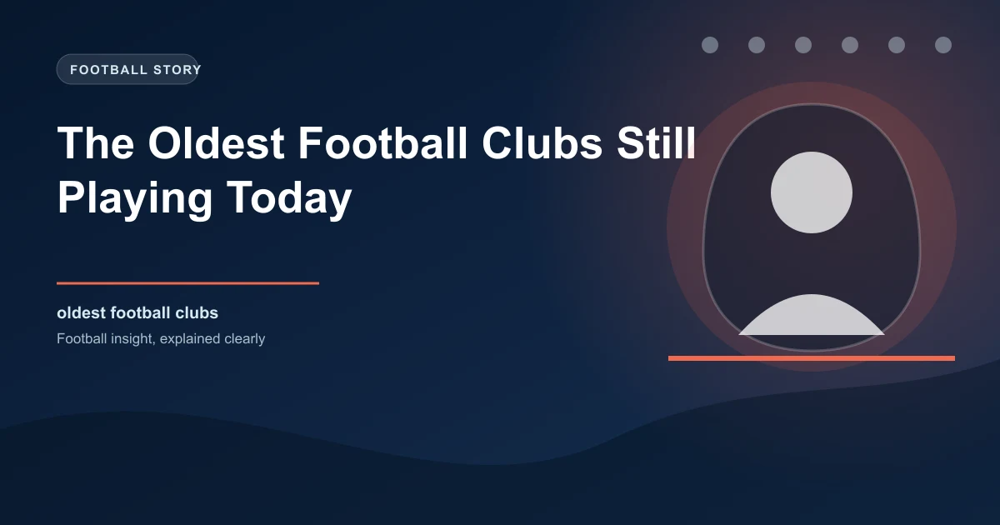

Football clubs come and go. Financial crises, relegations, and ownership failures have destroyed hundreds of teams over the sport's 160-year history. But some clubs have survived wars, depressions, and near-extinction to remain active today. These are the oldest football clubs still playing, and their stories are as dramatic as any on-pitch encounter.
Sheffield FC, founded on October 24, 1857, holds the distinction of being the world's oldest football club. The club was formed by members of the Sheffield Cricket Club, who wanted to play football during the winter months. They initially played under their own rules, which differed significantly from the FA code that would emerge in 1863.
Sheffield FC's original rules allowed for fewer players, had different offside provisions, and permitted a form of handling that the FA later banned. The club's influence on football's development was enormous: they pioneered the corner kick, the crossbar, and the concept of a organized league competition.
Today, Sheffield FC plays in the Northern Premier League Division One East, the eighth tier of English football. The club was awarded FIFA's Order of Merit in 2004, becoming only the second club (after Real Madrid) to receive this honor.
Sheffield FC's original headquarters, Bramall Lane, is now home to Sheffield United. The two clubs share a historical connection, with Sheffield United being formed in 1889 partly by former Sheffield FC players who wanted to compete at a higher level.
Cambridge University A.F.C., founded in 1863, is the oldest club in continuous existence that has always played association football under the FA rules. While Sheffield FC predates the FA's rules, Cambridge University A.F.C. was formed specifically under the new code.
The club has produced numerous internationals and has been instrumental in developing football tactics. The Cambridge Rules, which predated the FA's code, influenced many of the sport's fundamental laws, including the offside rule.
Cambridge University A.F.C. still competes in university football competitions, though its profile has diminished significantly since its early years when it was one of the strongest teams in England.
Notts County, founded in 1862, is the oldest professional football club in the world and the oldest currently members of the Football League. The club was formed by members of the Nottingham Cricket Club, following a similar pattern to Sheffield FC.
Notts County's history is rich with drama. They won the FA Cup in 1894, were founding members of the Football League in 1888, and have spent over a century in the professional game. The club's famous black and white stripes inspired Juventus's iconic kit after a Notts County representative gifted the Italian club shirts in 1903.
Despite their historical significance, Notts County has faced serious financial difficulties in recent years. They were relegated from the Football League in 2019, ending 137 years of continuous league membership. The club has since fought its way back and continues to compete in the National League.
| Club | Founded | Country | Current Level | Notable Achievement |
|---|---|---|---|---|
| Sheffield FC | 1857 | England | 8th tier | FIFA Order of Merit |
| Notts County | 1862 | England | 5th tier | FA Cup winners 1894 |
| Nottingham Forest | 1865 | England | 1st tier (PL) | 2x European Cup winners |
| Sheffield Wednesday | 1867 | England | 2nd tier | 4x FA Cup winners |
| Wrexham | 1864 | Wales | 3rd tier | Oldest Welsh club |
| Wimbledon | 1889 | England | 3rd tier | 1988 FA Cup winners |
| Barnsley | 1887 | England | 3rd tier | 2023 Championship playoff |
Nottingham Forest, founded in 1865, is one of football's most remarkable stories. The club spent decades in the lower divisions before Brian Clough transformed them into back-to-back European Cup winners in 1979 and 1980, one of the most extraordinary achievements in football history.
Forest's European triumphs remain among the most unlikely in the sport's history. Clough, working with a modest budget and largely unknown players, built a team that beat Malmo, Liverpool, Cologne, Ajax, Hamburg, and Real Madrid to claim consecutive European Cups. The achievement seems almost impossible in the modern era of football's financial hierarchy.
Forest has since returned to the Premier League, and their story continues to inspire clubs across the football pyramid. The City Ground remains one of England's most atmospheric stadiums, and the club's European heritage gives them a prestige that few clubs of their size can match.
Wrexham, founded in 1864, is the oldest football club in Wales and one of the oldest in the world. The club has spent most of its history in the lower tiers of English football, but their fortunes changed dramatically in 2020 when Hollywood actors Ryan Reynolds and Rob McElhenney purchased the club.
The takeover brought unprecedented global attention to Wrexham. The club's story was documented in the Emmy-winning series "Welcome to Wrexham," which introduced millions of viewers to the working-class Welsh city and its football club. The investment transformed Wrexham's infrastructure, squad quality, and commercial revenue.
Wrexham achieved back-to-back promotions, rising from the National League to League Two and then to League One. The club's rise, fueled by Hollywood glamour and genuine community spirit, has become one of football's most heartwarming stories.
The oldest football clubs share several characteristics that have helped them survive when others haven't. They typically have deep roots in their local communities, creating a bond between club and city that transcends football. Notts County's connection to Nottingham, Sheffield FC's bond with Sheffield, and Wrexham's relationship with its Welsh community have all been crucial to their survival.
These clubs have also demonstrated remarkable adaptability. They've changed divisions, changed leagues, and sometimes changed their entire identity, but they've always found a way to continue playing. Financial crises, ownership changes, and competitive failures have all been overcome through the determination of supporters and administrators.
England dominates the list of oldest football clubs, which is unsurprising given that the sport originated there. But other countries also have remarkably old clubs:
Historical clubs often have stronger fan bases and more stable finances than newer clubs, which can affect their performance over long seasons. When analyzing lower-league matches, consider the club's historical stability and community support as factors in their consistency.
The oldest football clubs are more than just sports teams. They're living connections to the origins of the world's most popular sport. When Sheffield FC takes the field, they're playing on the same ground where football's earliest experiments took place. When Notts County wears black and white, they're carrying forward a tradition that stretches back over 160 years.
These clubs remind us that football is more than just a business or a spectacle. It's a cultural institution that connects generations, communities, and nations. The oldest clubs have survived because people care about them, and that care is the most powerful force in football.
Check our free daily football predictions for every match of the season.
Generate optimized accumulator combinations from today's AI-powered predictions. Set your target odds and get instant ticket suggestions.
Free Ticket Builder →Catch live matches as they happen. Get golden tips and in-play alerts.
In-Play Tips